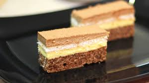

Bjelance istući u čvrsti snijeg i postupno dodavati šećer. Zatim lagano umiješati brašno s praškom za pecivo, orahe i mrvice. Peći na 180°C oko 25 minuta.
Za kremu umutiti žumanjke, šećer i puding s malo mlijeka, zatim ukuhati u ostatak mlijeka. Polovicu smjese pomiješati s otopljenom čokoladom. Ohladiti i dodati izrađeni margarin u obje kreme.
Biskvit premazati žutom kremom, dodati kekse namočene u kavu, zatim premazati čokoladnom kremom i posuti mljevenim orasima.